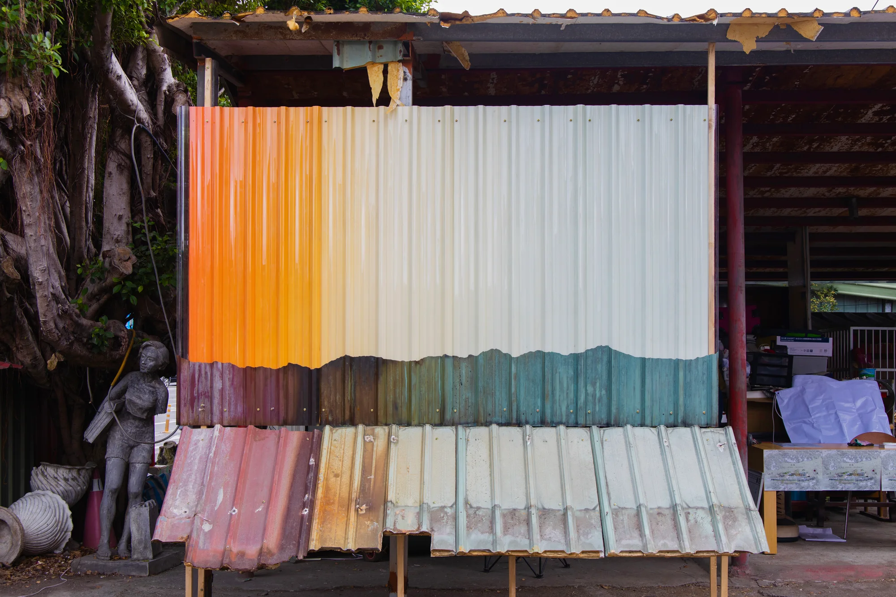
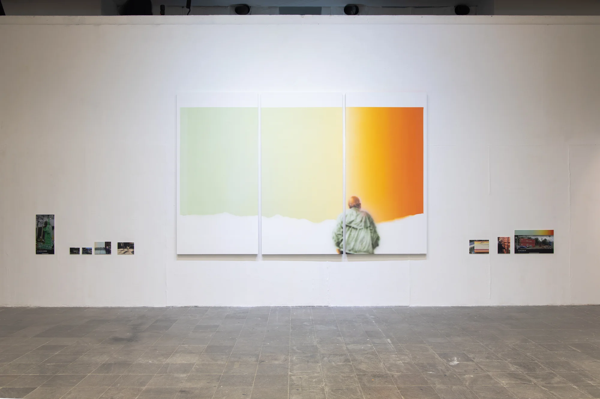

李神到厚櫃間的________2023年份 Year2023媒材 Medium壓克力、PC 浪板、現成物、鐵皮、木作、水性漆尺寸／片長 Dimensions / duration依場地而定作品與細節 ↗
李神到厚櫃間的________拷貝2023年份 Year2023媒材 Medium印刷品、裝框影像、狗玩具、木板上水性漆尺寸／片長 Dimensions / duration依場地而定作品與細節 ↗